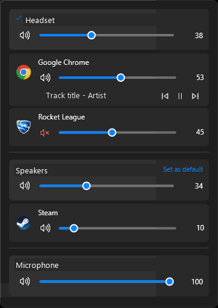
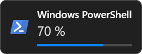

Per-app volume, on your media keys.
Sonic Screwdriver is a light Windows tray mixer. Press Shift + Vol− to turn Spotify down while the game keeps its volume, Ctrl + Mute to silence the window in front, Alt + Vol+ to switch your headset to the speakers.
Download for Windows Install options
Windows 10 (1809 or later) and 11, 64-bit, needs the .NET 8 Desktop Runtime. Released . Installer · Portable exe


What it does
-
Shortcuts on one app
A modifier plus a media key drives a specific app, the foreground window or your output devices. Plain media keys keep their usual job.
-
Competitive mode
One switch turns off the keyboard hook, the overlay and the process lookups for online games with strict anti-cheat.
-
Profiles and ducking
Save sets of app volumes such as “Game night”, and let a voice app automatically lower the others while it speaks.
-
Command line
Set a volume, mute an app or apply a profile from Stream Deck, Touch Portal or AutoHotkey.
Light, and private
Around 20 MB of RAM and no CPU at idle. It makes no network request unless you ask for an update check, and collects nothing. The keyboard hook only looks at the six media keys. Windows may show a SmartScreen warning because the files are not code-signed: how to verify a download, and what to know about security.